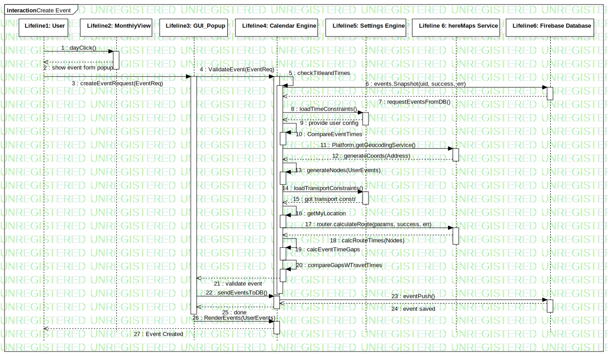

Interaction1
UMLInteraction
SmartCommute Architecture
::
Collaboration2
::
Interaction1
Description
none
Diagrams

Create Event
Participants
Lifeline1: User
Lifeline2: MonthlyView
Lifeline3: GUI_Popup
Lifeline4: Calendar Engine
Lifeline 6: hereMaps Service
Lifeline5: Settings Engine
Lifeline6: Firebase Database
Messages
Message1 (Lifeline1→Lifeline2)
show event form popup (Lifeline2→Lifeline1)
Message2 (Lifeline1→Lifeline3)
Message3 (Lifeline3→Lifeline4)
checkTitleandTimes (Lifeline4→Lifeline4)
Message5 (Lifeline4→Lifeline6)
(Lifeline6→Lifeline4)
requestTimeConstraints (Lifeline4→Lifeline5)
provide user config (Lifeline5→Lifeline4)
CompareEventTimes (Lifeline4→Lifeline4)
Message14 (Lifeline4→Lifeline 6)
lat, lng (Lifeline 6→Lifeline4)
g (Lifeline4→Lifeline4)
Message10 (Lifeline4→Lifeline5)
got transport constr (Lifeline5→Lifeline4)
getMyLocation (Lifeline4→Lifeline4)
Message4 (Lifeline4→Lifeline 6)
(Lifeline 6→Lifeline4)
calcEventTimeGaps (Lifeline4→Lifeline4)
compareGapsWTravelTimes (Lifeline4→Lifeline4)
validate event (Lifeline4→Lifeline3)
Message12 (Lifeline3→Lifeline4)
Message11 (Lifeline4→Lifeline6)
event saved (Lifeline6→Lifeline4)
done (Lifeline4→Lifeline3)
Message13 (Lifeline3→Lifeline4)
Event Created (Lifeline4→Lifeline1)
Properties
Name
Value
name
Interaction1
stereotype
null
visibility
public
isReentrant
true
Owned Elements
Create Event